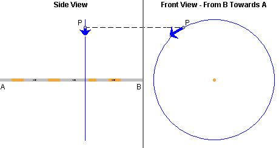
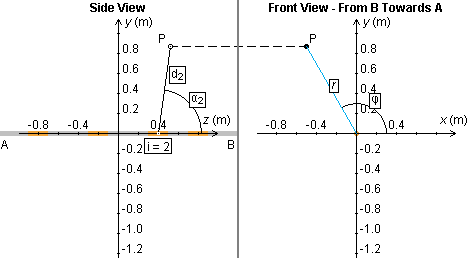
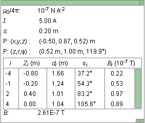

When you click PLAY, the current direction will be animated. See Point 8, Current Direction, below.
After Play has been clicked, the button will change into the Pause button . Click it to stop the animation. The button will revert to the Play button. To resume the animation, click Play once more.



When the Segments toggle button is selected and you are in the "Physical Reality View" mode, you can select wire segments by clicking on parts of the wire that are shown in grey (unselected segments). Selected segments are shown in a copper color. In the image above, four segments are selected. The applet displays and calculates the resultant magnetic field vector (in blue) at field point P due to the current in all selected segments. (The Vector button needs to be selected for the field vector to be displayed.)
Clicking on a selected segment will deselect the segment.
In calculating the magnetic field due to the current in a segment, the applet takes the position of the segment to be that of the center of the segment.
If the Segments button is not selected, the applet assumes the wire to be infinitely extended and it displays and calculates the magnetic field vector for a current in such a wire. The wire is shown entirely in copper color when the Segments button is not selected.
The wire is shown entirely in copper color also when the Segments button is selected and all segments of the wire in the applet window are selected. However, the field vector in this case will be the field vector due to the current in the selected segments only, not that due to the current in an infinitely extended wire.
To select several adjoining segments at once, select the Segments button, click with the mouse on one segment and drag along all segments you want to select.

The physical situation simulated by the applet is essentially three-dimensional. To display all three dimensions, the applet displays a side view of the wire (projection onto the y,z plane) in the left portion of the window and a front view of the wire (projection onto the x,y plane) in the right portion of the window. The coordinate axes and the coordinates of the variable field point P can be inspected in the "Coordinate View" mode as illustrated in the diagram below. See Point 7, "Mode", below.

In the "Physical Reality View" mode, when the Vector toggle button and the Segments toggle button are selected, the resultant magnetic field vector at the given field point due to the current in all selected segments will be displayed in blue as in the following picture. The left and right portions of the window will show the projections of the field vector onto the y,z and x,y planes, respectively. The projections of the magnetic field "line" through point P onto the two planes are shown as well. (Blue circle on the right, blue straight line on the left.)
If the Segments button is not selected, selecting the Vector button will display the magnetic field at point P due to a current in an infinitely long straight wire.
The applet allows the field point P to be anywhere in the three-dimensional x,y,z space. The left portion of the window shows the projection of P onto the y,z plane, the right portion of the window the projection of P onto the x,y plane. In the left portion of the window, point P can be dragged only horizontally, i.e., parallel to the wire and to the z-axis. In the right portion of the window, P can be dragged freely. In general, dragging the projection of the point in the right portion of the window will affect the projection of the point in the left portion.

When this toggle button is selected, the projections onto the two planes of the magnetic field line (circle) through the field point will be shown in blue, as a circle in the right portion of the applet window and as a straight line in the left portion of the window. All field "lines" are circles parallel to the x,y plane. The projection of such a circle onto the y,z plane is a straight line parallel to the y axis. See the last image in the preceding Point 3.


The Data toggle button lets you display/hide the Data box shown above. The vertical dimensions of the box can be resized by dragging the green rectangle in the lower right-hand corner of the box up or down. The box can be closed by clicking on the little green box marked by an "X" in the upper right-hand corner. The box can be dragged to another location in the window by clicking anywhere else in the box and dragging. A green scroll bar inside the box allows scrolling through information about individual segments.
The Data box contains the following information.
- m0/4p: universal constant in Biot-Savart law
- I: current in A
- s: segment length in m
- P: (x,y,z): Cartesian coordinates of the draggable field point P in m
- P: (z,r,f): cylindrical coordinates of the draggable field point P, z and r in m, f in degree
-
when the Segments button is selected, an insert in the
Data box contains the following information for each
segment:
- i: segment label; increasing from left to right, with i = 0 for the segment whose center is at the origin, negative values of i for segments to the left of the origin and positive i for segments to the right of the origin
- Zi: z-coordinate of the center of Segment i in m
- di: distance from from center of Segment i to field point P in m (the distance di and the angle ai belonging to a segment are illustrated in the "Coordinate View" mode if one points the mouse to the segment)
- ai: angle between z-axis and line from Segment i to field point P
-
Bi
 : magnitude
of the magnetic field vector at field
point P due to Segment i; the applet
calculates this magnetic field vector as if
the current in the segment were
at the center of the segment, i.e., at
Zi
: magnitude
of the magnetic field vector at field
point P due to Segment i; the applet
calculates this magnetic field vector as if
the current in the segment were
at the center of the segment, i.e., at
Zi
- B: magnitude of the resultant magnetic field vector at field point P due to the currents in all selected segments (if the Segments button is selected) or due to the current in the infinitely extended wire (if the Segments button is not selected).

Resets the applet to its default setting.

The applet can be run in one of two modes, the "Physical Reality View" mode or the "Coordinate View" mode. The mode is selected by clicking the appropriate radio button.
For details on the two modes, see Point 3 above, "Magnetic Field Vector at Variable Field Point".

The current direction is indicated by small arrows on the wire. The direction can be animated by clicking PLAY. A drop-down menu offers a choice between the conventional current direction and the electron current direction. If "Electron Current" is selected, the arrows indicate the direction in which the electrons in the wire are moving.
The magnitude of the current is represented by the density of the arrows on the wire.
The Current Slider allows you to vary the current between -10.00 A and 10.00 A, in steps of 0.01 A. The sign of the current is relative to the direction of the z-axis and relative to which kind of current direction is used. (See the preceding Point 8.) If the current is positive, the conventional current is in the positive z-direction, and the electron current in the negative z-direction. If the current is negative, the conventional current is in the negative z-direction, and the electron current in the positive z-direction.

The magnitude of the magnetic field vector projections can be varied by means of this slider in a range from 1 to 1000, in steps of 1.